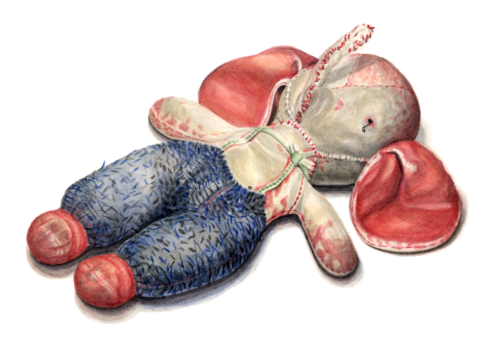
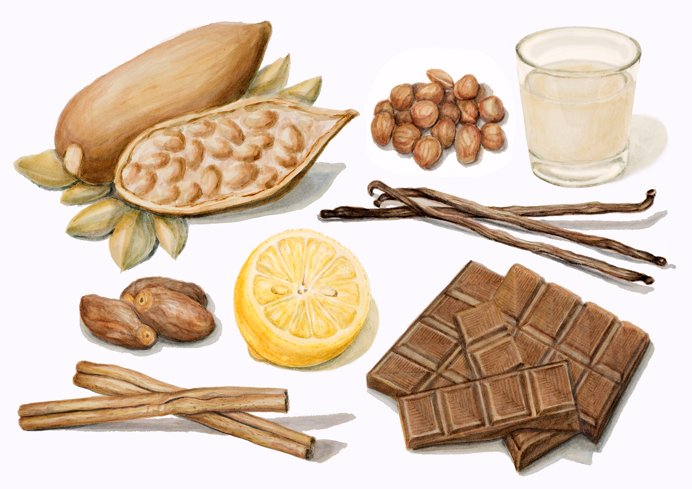
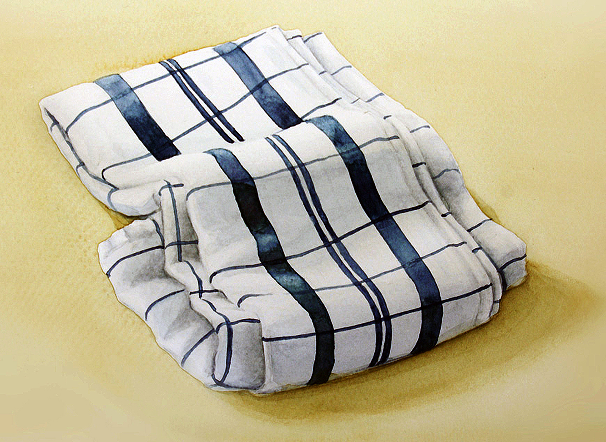

Fanti, Aquarell auf Papier

Zutaten für Energyballs, Aquarell auf Papier
Illustrationen für eine Menukarte neu zusammengestellt, Aquarell auf Papier

❮
❯
Caption Two
Aquarell Objekte
Kleinere Aquarelle eigenen sich zum Beispiel für Speisekarten oder Etiketten. Bei mehreren Objekten auf
einem Bild können die Objekte flexibel angeordnet werden – insofern eine Reporduktion verwendet wird. Dies
erlaubt Ihnen, mehrere Versionen anzuschauen und Ihre Wunschkomposition auszuwählen.
Ebenfalls die
Farb- und Lichtstimmung können nachträglich bis zu einem gewissen Grad angepasst werden.